naturaleza humana
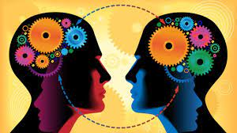Basados en el concepto filosófico, podemos definir la naturaleza del ser humano como aquella en la que tiende a compartir semejanzas y características que lo distinguen a otros seres vivos por su capacidad de relacionarse, pertenecer, pensar sentir y actuar. El paso del tiempo y las diversas formas de relacionarnos han construido parámetros o estándares sociales, así como también debates profundos de teólogos, filósofos, biólogos, contextualizando la naturaleza humana de acuerdo a sus propios puntos de vista; dando explicación racional a la ética y la moralidad.
ética y moralidad
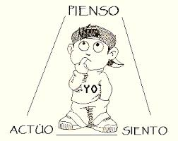 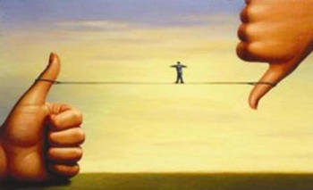La ética es un estudio filosófico y científico mientras la moral es puramente práctica; es decir, la ética habla desde la razón y la reflexión filosófica pero la moral se refiere a los actos que realizamos día a día durante nuestra vida. Dentro de las construcciones sociales algunos filósofos, como Thomas Hobbes, creían que nuestra naturaleza social era eminentemente artificial. Sin embargo, en el estado de naturaleza, la libertad absoluta era extremadamente peligrosa, dado que, al disponer todos los humanos de ella, la vida se convertía en algo impredecible, desagradable, brutal y breve. Esto significaría la autoimposición de los ordenamientos sociales, políticos y sobre todo económicos; haciendo diferenciación entre "lo bueno y lo malo" fomentando relaciones de poder
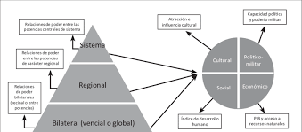relaciones de poder
Establecidas desde planteamientos filosóficos y sociológicos Michel Foucault, Pierre Bordieu y Max Weber, teorizaron sobre las relaciones de dominación y de control como estrategias de poder que buscan un objetivo en común, el silencio y la obediencia del dominado; un dominado que es, ante todo, un sujeto actuante, pues para Foucault no hay ejercicio del poder si no hay libertad; la perspectiva de Pierre Bourdieu, crítico contemporáneo de las estructuras sociales y autor de conceptos como habitus, campus, capital, capital simbólico, capital económico, entre otros conceptos anclados en los espacios sociales donde el poder es una lucha de fuerzas que tiene como objeto alcanzar sistemas de posicionamiento y de dominio. Finalmente, la perspectiva weberiana, que sustenta, en una estructura social, legítima, las relaciones de poder llamadas por él estrategias de autoridad. Tales estrategias se ejercen y tienen sus efectos de obediencia dependiendo del tipo de organización y de la manera como ésta pueda estar estructurada administrativamente.
relaciones de poder.font-family:cur;educación femenina
Uno de los principales problemas de la educación en América Latina, es la gran desigualdad económica existente; siendo las regiones poco o naturalmente urbanizadas, quienes sufren con mayor recurrencia la baja alfabetización, ausentismo o deserción en su gran mayoría por mujeres, vulnerando así su participación social y dejando ejercer por parte del género dominante el control en las relaciones de poder. Estás relaciones constituyen parte fundamental en el crecimiento y aprendizaje significativo, por lo que los patrones de conducta condicionan la estabilidad emocional de las personas. Si las mujeres son las encargadas de difundir estos esquemas, están condicionadas a repetir
estadisticas
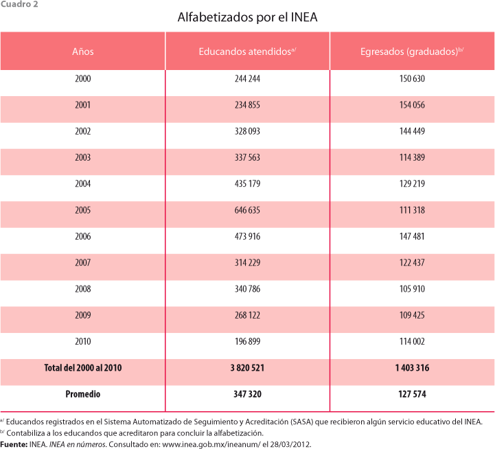 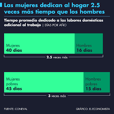
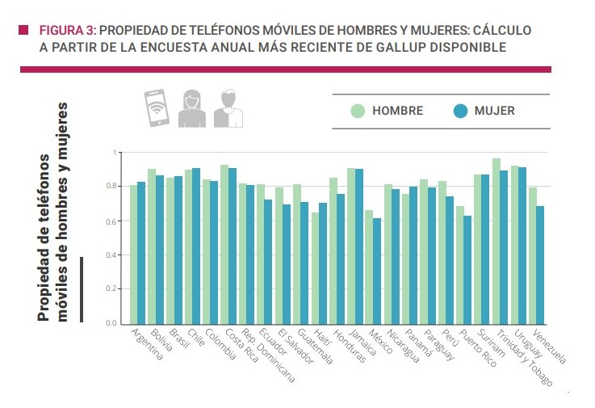
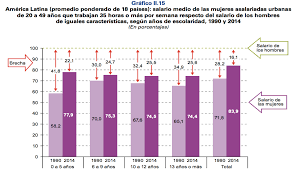
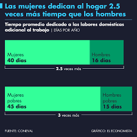
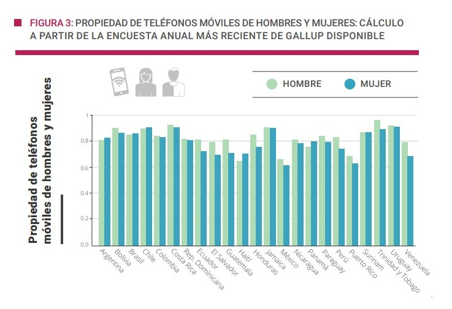
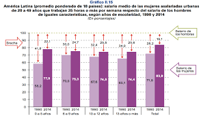